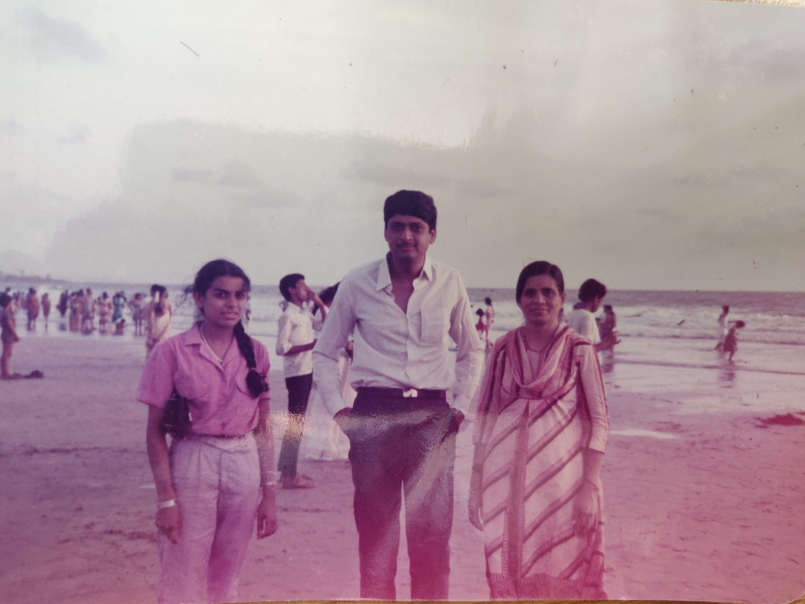

Our Nani
Our Nani left us at the age of 84 despite always giving us the reassurance that she would be well and kicking for many many years to come. First time Nani, you didn't keep your word.
Nani was the most amazing person I've ever met. I tell her story from her grandchildren's point of view in the hope that her memory lives on.
Nani had an arranged marriage with my Nana. She had two children, my Masi and Mumma; a very small family for that generation. Nani came to the UK when my Masi and Mumma were only 5 and 6 years old. My Nana used to work in textiles and got the opportunity to come to Manchester. They stayed in Manchester for 2 years I believe. She didn't like Manchester as it was always raining there. She told my Nana that she didn't want to stay there and she wanted to go back to India. My Nana accepted this (no doubt with much frustration, the type of person he was!). A couple of years later it was clear Nana wanted and needed to come back to the UK. A further opportunity arose and I recall my Nani telling me that she told Nana she would only go back to the UK if they settled in London- a city she had never been to but heard so much about. My Nana and Nani left both sides of their families to settle in London permanently. They were the first and only of their siblings at the time to move abroad. No doubt that must have been extremely difficult for them all.
Mumma and Masi started primary school in the UK and grew to become hugely strong independent women with impeccable English, just like my Nana would have expected and my Nani would have encouraged.

My Nani worked in Selfridge's. She was so proud of this. Only a few days before she passed away she told me (by WhatsApp!) That she wanted to show me how she used to wear make up and get ready to go to work. She loved dressing up. She was very proud of having worked there but felt that she didn't work long enough. She craved the independence right until the very end. She even told me she wanted to show me how she wore make up and dressed up for work during her last few days.
Nani has always been a very sociable person. She loved to talk and would always be the one to start conversations with random people; despite it only being the four of them in the UK out of the entire extended family, she said she never felt lonely. She made friends easily.
Mumma and Masi grew up and got married. Nani knew my dad since he was seven years old. My parents did not have an arranged marriage; quite the opposite in fact but that's not a story for today. Nani and my dad had a very strong relationship despite occasional frustration with each other. The way they interacted always made me quite proud. My dad has truly lost his 'retirement' companion as he calls it. He's not really retired though but anyway!

Masi moved away to South London after getting married to Masa, but it never really felt like she was far away. She would frequently visit Nani and Nana, and my mum and dad, all North Londoners. Being such a small family they definitely needed and enjoyed each other's company.
Nani and Nana had four grandchildren, Payall, Shruti, Partha and Avisha. I was the first born and Nani and Nana adored me (as you would!!). When my mum went back to work after maternity leave and I was still a baby I was shipped off to my Nana and Nani's house every Monday - Friday. I of course do not remember that but I imagine that's where my attachment to them began. My parents did take me back full-time eventually!!!
Shruti was born 4 years later in 1992 and I was less than pleased that my Masi had this other baby to deal with when I thought I was her favourite! Then it was Partha's turn 6 months later and finally Avisha in 1995. And that made our family, Nani & Nana's 4 grandchildren. They were both so proud. Nani looked after us all at different stages of our lives. I remember a trip to Disneyland Paris when we all went but left Avisha at home with Nani for a week (so mean I know!!)

I lost my Nana, my best friend when I was 11, on the first day of the school summer holidays. He was only 69 and it was unexpected. I didn't get to see him slip away, he was alone in hospital and I don't understand why his time had come so early, something which I find hard to deal with to this day.
My Nani was left without Nana but she remained strong and full of life.
Mumma and Masi took Nani with us all on many holidays, to Devon, Centre Parcs, Venice, Belgium, New York, Las Vegas, Dubai, to name a few. She loved exploring new things and places.
Nani wasn't a traditional Nani really. She didn't have a passion for cooking and didn't constantly try to offer us food. It was never her focus in life. But her tuvar Daal was simply the best (with my dad's version being a close runner up!) and we all loved it. During lockdown I remember telling her I couldn’t wait for her to make it for me again. I didn't realise I would never have it again. My other favourites of hers were her mogo with salt and marchu, chips and dhokla, that's what I remember of our school holiday lunches with her.
In the year 2000 Nani suffered a severe stroke and was told by the doctors that she would never walk again and would most likely be wheelchair-bound for life. For someone like Nani that was the biggest blow ever. She couldn't face the idea of being dependent on anyone and I guess it was her strong willed character and approach in life which meant she persevered and after some time, through months and months of physio she started walking again only needing the aid of a walking stick. It was truly inspirational. During her time in hospital, my mum taught her how to use the internet, worrying that her mother would never walk again and needed something to keep her busy. Nani loved this; she learnt how to use a phone and a computer… she was amazed by the internet. Actually I am amazed at how she browsed the internet and found things she was interested in. She went to computer classes at the Selby centre. This ability to adapt and learn new things meant she could keep in touch with family and friends from around the world, and more importantly with us, her grandchildren. A quick WhatsApp conversation here and there was perfect for our busy generation. She recently told my dad she’s not ready to die yet because she has too many YouTube videos to watch still. So I hope where ever you are now there’s a good WiFi connection and keep watching your YouTube videos.

Aside from this new found hobby, Nani had an immense hobby of shopping and window shopping. She would travel absolutely everywhere in London by bus- nothing phased her. She often got seriously told off by my mum and masi for still being out on a bus at 10pm!! She was fearless.
Nani was always very skilled at knitting and sewing. She made lots of things over the years. Most recently she made a beautiful skirt for her great granddaughter Ishika and then made blankets for Avisha and Partha to use for their children in the future. She didn't get round to finishing the blankets for me and Shruti and even on her last day with us she remembered them and told us all to share them between us as and when required.
The last year has been tough for everyone in the world. But in a way for Nani, although she couldn't meet most of the family and was stuck at home most of the time, she did get the opportunity to live with my parents and Partha, her only grandson full-time. Partha has been so protective of her in the last year, he was adamant that he couldn't let her catch the virus and she didn't. What she did get was fully served breakfast, lunch and dinner from my mum! She must have felt like a queen, living in a hotel! It is comforting to know that my parents and Partha will have many more memories of her from the past year compared to the rest of us.
Nani wasn't ready to go. She wanted to live for decades more and we all genuinely thought she was going to be one of those people who would live beyond 95. She wanted to see Partha and Avisha’s wedding; in fact she even wanted to see Ishika’s wedding but of course that was most unrealistic! Shruti and I were lucky to have her blessings at our weddings and I hope we can somehow fill her gap at Avisha and Partha’s weddings in the future. The day before she passed away she sent a Whatsapp message to someone she knew to see if they could deliver a sari so she could give to Partha for his future wife; she had already given saris to us girls previously and obviously felt she had more time. We only saw this after she had passed. She thought of everything. She got to a good age but because of who she was, being so young at heart, I feel she was taken from us too soon and so quickly. She fought and fought to the last minute but she couldn't control the inevitable. Even in her last few hours she made a dinner request for farari shaak. She didn’t make it to dinner time.
Her last few days were surreal. She was in hospital for 7 days and the doctors told her lungs were failing and in reality there wasn’t much they could do. My Nani being the cool cookie she was and wanting to live, asked the doctor for a lung transplant and she wasn’t even joking apparently! She enjoyed the mac & cheese and vegetable biryani they gave her at the hospital and of course the vanilla ice cream. We were very lucky that her two daughters, her two sons-in-law and her four grandchildren got to see her and spend a few hours with her on her last day; she was so alert and was able to talk to us albeit it was very difficult for her to do so. Finally, she said she would rest for a while and she slipped away peacefully in her sleep shortly after with her two amazing daughters holding her hands. No doubt they will miss her the most.
Our Nani’s wishes were for her whole body to be donated to medical research; she said she wants to help doctors and scientists find cures to medical issues such as hers. A truly amazing and progressive thought.
Taken too soon but in the most peaceful way. We love and miss you so much Nani. I am honoured to have been your first grandchild and for my own daughter to have met you, her Big Nani. I know all you wanted to do in the past year was to hold her and play with her which you couldn’t and for that I am so sorry.
See you in another lifetime.
Love you ❤️
Payall, and with the same sentiments from Shruti, Partha and Avisha.
We hope we can follow in your footsteps and become strong, independent and forward-thinking people
The Jhalla, Dave and Desai families would like to thank you all for your kind messages from here and abroad which have provided comfort and strength during this difficult time.